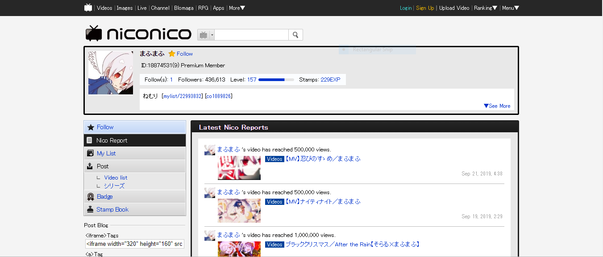

It is a video sharing website from Japan. Users are able to upload, watch, and of coure share videos. All utaite upload their covers or songs on Nico Nico Douga. It's basically like Youtube but the comments are live, so they are displayed over the video. Of course, there is an option to hide the comments.
